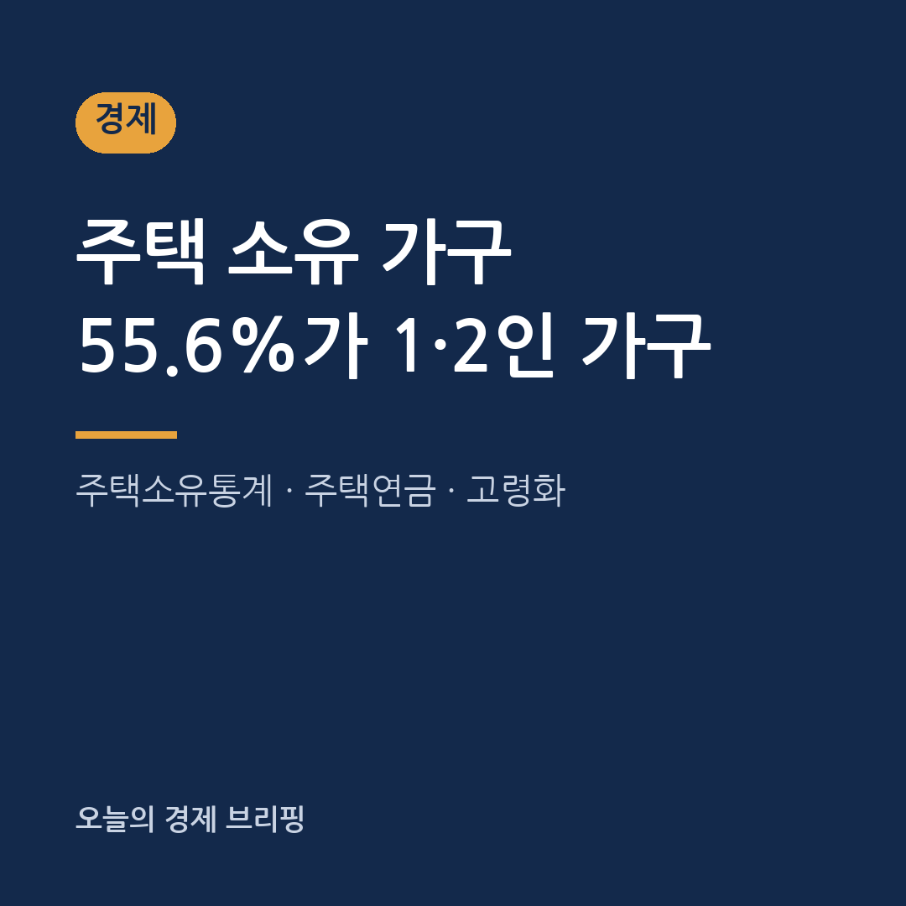

주택소유통계 1·2인 가구 55.6%, 주택연금 가입 고령화 분석
2026-11-22-1528-tistory 발행 키트 · 이 페이지는 검색에 노출되지 않습니다.
- 블로그 글쓰기 화면을 엽니다 (네이버 앱/PC, 티스토리 등).
- 제목 복사 → 제목 칸에 붙여넣기.
- 본문 전체 복사 → 본문에 붙여넣기. 그림·표가 같이 들어갑니다.
- 그림이 빠졌다면 아래 이미지에서 [복사] 후 그 자리에 붙여넣거나 [저장] 후 사진 첨부.
- 발행 설정에서 카테고리를 아래 표시된 메뉴로 고릅니다.
- 첫 문단에 내 생각 한두 줄을 더하고, 태그 복사 → 태그 칸에 붙여넣고 발행.
제목
카테고리
경제태그
본문 (그림·표 포함)
휴대폰 블로그 앱에서는 그림이 같이 붙지 않을 수 있어요. 그때는 [글자만 복사] 후 아래 이미지를 저장해 [그래프1]·[표1] 자리에 첨부하세요.
핵심 결론부터 정리합니다. 2025년 11월 1일 기준 주택 소유 가구의 55.6%가 1인 또는 2인 가구였고, 주택연금(주택을 담보로 맡기고 평생 연금을 받는 제도) 신규 가입자는 갈수록 고령층으로 이동하고 있습니다. 집을 가진 사람의 가구 형태와 노후 자산을 쓰는 시점이 함께 바뀌는 흐름입니다.

▶ 배경: 가구 구조의 변화
국가데이터처가 KOSIS에 공개한 주택소유통계를 보면, 집을 가진 가구는 전국에 1,296만 5,000가구입니다. 가구원 수별로 나누면 소유 구조가 뚜렷하게 드러납니다.
가구원 수별 주택 소유 가구 (2025년 11월 1일)
| 구분 | 가구 수 | 비중 |
|---|---|---|
| 1인 가구 | 270만 9,000 | 20.9% |
| 2인 가구 | 449만 8,000 | 34.7% |
| 1·2인 합계 | 720만 7,000 | 55.6% |
출처: 세계일보(국가데이터처 주택소유통계)
1인 가구는 270만 9,000가구로 전체 주택 소유 가구의 20.9%이며, 전년보다 0.6%p 높아졌습니다. 2인 가구 비중 34.7%도 집계 이후 가장 높은 수치입니다.
▶ 핵심 내용 1: 1인 가구 주택 소유의 증가와 고령층
주택을 소유한 1인 가구의 비중은 2015년 14.8%에서 2025년 20.9%로 10년간 6.1%p 상승했습니다.

1인 가구 전체 중 집을 가진 비율(소유율)도 32.9%로 역대 최고입니다. 서울 지역 집계에서도 1인 가구 비중은 19.2%로 역대 최고 수준입니다.
연령별로는 지난해보다 늘어난 13만 7,000가구 중 60세 이상이 10만 5,000가구입니다. 50대는 2만 4,000가구, 40대는 1만 1,000가구, 30대는 3,000가구가 늘었습니다. 증가를 이끈 쪽이 고령층이라는 점이 분명합니다.
▶ 핵심 내용 2: 주택연금 가입 시기의 후퇴
매일경제 보도에 따르면 주택연금 신규 가입자의 연령대도 높아지고 있습니다. 올해 신규 가입자 4명 중 1명이 80대이고, 60대 비중은 4년 사이 41%에서 27%로 낮아졌습니다. 70~80대는 증가했습니다.

기사가 제시한 배경은 기대수명의 증가와 집값 상승입니다. 소유 가구 중 고령 1인 가구가 늘어난 통계와 함께 보면, 집을 가진 고령층이 연금화 시점을 늦추며 더 오래 보유하는 경향으로 해석할 수 있습니다. 다만 두 자료의 직접적인 인과관계가 확인된 것은 아닙니다.
▶ 영향: 노후 소득 설계에 주는 의미
첫째, 고령 1인 가구가 늘어나는 만큼 소득 공백을 주택 자산으로 메우려는 수요가 계속될 수 있습니다. 둘째, 가입이 늦어지면 같은 제도라도 이용 기간과 설계가 달라지므로 개인별 비교가 필요합니다.
근로 기간도 변수입니다. 김영훈 고용노동부 장관은 정년 연장과 관련해 27일 더불어민주당 특별위원회에서 합의가 되지 않으면 정부가 나서겠다고 밝혔습니다. 정년이 달라지면 은퇴 시점과 주택연금 활용 시점의 계산도 달라질 수 있습니다.
▶ 확인할 점
1. 주택연금의 가입 조건과 예상 수령액은 금융기관 안내로 직접 확인해야 합니다.
2. 주택소유통계는 2025년 11월 1일 기준이므로 현재 시장 상황과는 시차가 있습니다.
3. 27일 정년 연장 논의 결과가 노후 설계의 전제를 바꿀 수 있습니다.
▶ 정리
1. 주택 소유 가구의 55.6%가 1·2인 가구이며, 1인 가구 비중은 10년간 14.8%에서 20.9%로 올랐습니다.
2. 1인 가구 증가분의 대부분은 60세 이상입니다.
3. 주택연금 신규 가입자 중 60대 비중은 41%에서 27%로 줄고, 80대가 4명 중 1명입니다.
이미지 (개별 복사·저장)


출처 (본문 맨 아래에 붙여넣기 권장)
- 세계일보, 집주인 절반 이상이 1·2인 가구…1인 가구 주택 소유 역대 최고, https://www.segye.com/newsView/20261122506162 - 매일경제, 주택연금 갈수록 늦게 가입…60대 줄고 70~80대 증가, https://www.mk.co.kr/news/economy/12215480 - 연합뉴스, 노동장관 "정년연장, 27일 與특위 합의 안 되면 정부 나설 것"(종합), https://www.yna.co.kr/view/AKR20261122019051530